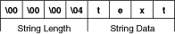
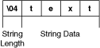
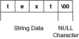

Open example�
�
Open example�
� Find related examples
Find related examples
This section reviews important concepts regarding array and string data in the Call Library Function Node.
(Windows) Refer to the labview\examples\Connectivity\Libraries and Executables\Libraries and Executables.lvproj for an example of using arrays and strings in shared libraries (DLLs).
Open example�
� Find related examples
Arrays of numeric data can be comprised of any type of integers or floating point numbers with single (4-byte) or double (8-byte) precision. When you pass an array of data to a shared library function, you can pass the data as an array data pointer, as a LabVIEW array handle, or as a LabVIEW array handle pointer.
Array Data Pointers have the following characteristics whether you pass the Array Data Pointers in the Windows API or in another API:
Remember that the Windows API does not use LabVIEW array handles, so with functions that are part of the Windows API you can use only Array Data Pointers.
If you pass the array data as a LabVIEW array handle, you can use LabVIEW LabVIEW Manager functions, such as NumericArrayResize, to resize the handle. If you need to resize a handle to an array of strings or clusters, consider alignment on different platforms.
The types of your string pointers must match the types of string pointers that your function uses, or errors occur. The Call Library Function Node offers the following choices:
You can think of a string as an array of characters. Assembling the characters in order forms a string. LabVIEW stores a string in a special format in which the first four bytes of the array of characters form a 32-bit signed integer that stores how many characters appear in the string. Thus, a string with n characters requires n + 4 bytes to store in memory. For example, in the following illustration, the string text contains four characters.

When LabVIEW stores the string, the first four bytes contain the value 4 as a 32-bit signed number, and each of the following four bytes contains a character of the string. The advantage of this type of string storage is that NULL characters are allowed in the string. Strings are virtually unlimited in length, up to 231 characters. This method of string storage is shown in the previous illustration. If you pass a LabVIEW string handle from the Call Library Function Node to the shared library, then you can use the LabVIEW Manager functions, such as DSSetHandleSize, to resize the LabVIEW string handle.
The Pascal string format is nearly identical to the LabVIEW string format, but instead of storing the length of the string as a 32-bit signed integer, the string length is stored as an 8-bit unsigned integer. Storing the string length as an 8-bit unsigned integer limits the length of a Pascal-style string to 255 characters. A Pascal string that is n characters long will require n + 1 bytes of memory to store. The following illustrations shows a Pascal string.

C strings are probably the type of strings you will deal with most commonly. The similarities between the C-style string and normal numeric arrays in C becomes much more clear when you see that C strings are declared as char*, where char is typically an 8-bit unsigned integer. Unlike LabVIEW and Pascal strings, C strings do not contain any information that directly gives the length of the string. Instead, C strings use a special character called the NULL character to indicate the end of the string. NULL is defined to have a value of zero in the ASCII character set. Notice that NULL is the number zero and not the character �0.� Thus, in C, a string that contains n characters requires n + 1 bytes of memory to store: n bytes for the characters in the string and one additional byte for the NULL termination character. The following illustration shows how a C-style string is stored in memory.

The advantage of C-style strings is that they are limited in size only by available memory. However, if you are acquiring data from an instrument that returns numeric data as a binary string, as is common with serial or GPIB instruments, values of zero in the string are possible. If you treat the string as a C-style string, your program incorrectly assumes that the end of the string has been reached, when in fact your instrument is returning a numeric value of zero. For binary data that might contain NULL values, consider using an array of 8-bit unsigned integers.
Observe the following guidelines when passing string data to a shared library:
When a shared library function increases the size of a string or array that you passed by handle, you need to adjust the size of the handle that references the data. You can adjust the handle size using the memory manager routine DSSetHandleSize. Because this routine requires you to calculate the size of the new memory space, you must account for platform-dependent requirements about how you align and pad memory. A piece of data is aligned if it falls on a boundary equal to a multiple of its size. For example, a 2-byte value is at a memory address that is a multiple of 2 and a 4-byte value is at a memory address that is a multiple of 4. On Intel processors the maximum alignment is 4.
The following examples highlight alignment differences on various platforms for a three-dimensional array of clusters, with each cluster containing a double-precision, floating-point number and a 1-byte Boolean:
 |
Note��Although you must use DSSetHandleSize to resize a string or an array of arbitrary data type, you can use the NumericArrayResize manager routine to resize arrays of numeric data. NumericArrayResize automatically accounts for platform-dependent alignment requirements. |
When you are not passing LabVIEW handles and your shared library function must create an array, resize an array, or resize a string of data, you should break the shared library function into the following two shared library functions: